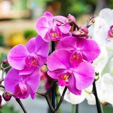

Bem-vindo ao Mundo das Flores!
Rosa
Girassol
Tulipa
Margarida

Orquídea

A rosa é uma das flores mais populares do mundo. Ela simboliza o amor e a paixão. Com suas pétalas delicadas e fragrância suave, a rosa é muitas vezes considerada um símbolo de beleza e elegância.
Voltar à Página InicialO girassol é conhecido por sua grande flor amarela que se parece com o sol. Ele simboliza adoração, lealdade e longevidade. Girassóis são plantas que trazem alegria e luz, além de serem muito utilizados em decorações.
Voltar à Página InicialAs tulipas são flores elegantes e simples, muitas vezes associadas à primavera e ao renascimento. Elas vêm em uma variedade de cores vibrantes e são conhecidas por sua forma simétrica e beleza suave.
Voltar à Página InicialA margarida é uma flor simples e encantadora, com pétalas brancas e um centro amarelo. Simboliza pureza e inocência, e é frequentemente associada à simplicidade e ao amor verdadeiro.
Voltar à Página InicialA orquídea é conhecida por suas flores exóticas e elegantes. Simboliza beleza rara, força e amor. É uma das flores mais diversas e complexas, apreciada por sua aparência sofisticada.
Voltar à Página InicialO lírio é uma flor majestosa com pétalas elegantes e fragrância marcante. Simboliza pureza e renascimento, e é frequentemente associado a ocasiões especiais e celebrações.
Voltar à Página Inicial